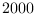

Next: February – Voronoi Tesselation Up: Blog posts 2022 Previous: Blog posts 2022 Contents
There is quite a pile of literature on the subject of the inverse of a Gaussian distributed variable (this should not be fixed with inverse Gaussian distribution – it is a different matter). In fact, the inverse distribution is ill-behaved; the mean and variance does not generally exist.
I came up with a simple approximation that works well if the mean is large enough and the variance is small enough (I have not worked out the details of the exact conditions for this approximation. However, the results can be verified by Monte Carlo simulations).
First, approximate the Gaussian distributed variable
 by a log-normally distributed variable
 Lognormal
Lognormal with corresponding mean and variance, i.e.
with corresponding mean and variance, i.e.

Using the theory of log-normal distribution, the inverse of is now given by
That's it!
References: